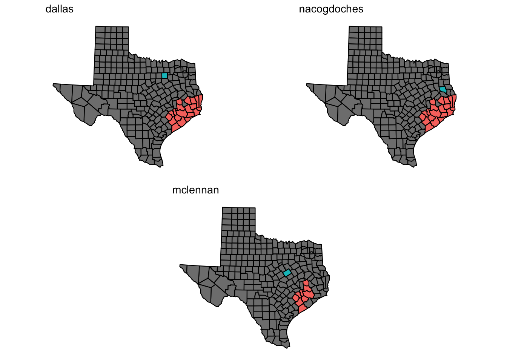

2 Reception centers
- evacuation counties mapped to reception counties
2.1 East Gulf Coast

2.2 Central Gulf Coast
2.3 South Gulf Coast
2.4 Adjacency Matrix
- All low lying counties are served by at least two reception centers
- San Antonio is the highest degree node